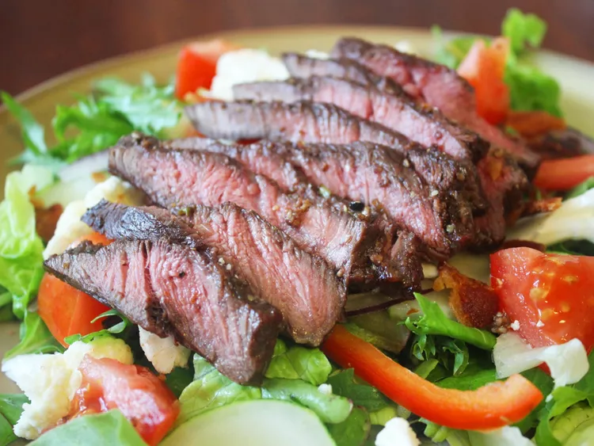

"Perfect Flat Iron Steak"

Description
This delicious flat iron steak was created from a combination of different recipes that I read. I combined, adjusted, and finally perfected the marinade and cooking time to my taste. I'm sure you will love it as well. After all, it is perfection!
Ingredients
- 1 (2 Pound) flat iron steak
- 2 1/2 tablespoons olive oil
- 2 cloves garlic, minced
- 1 teaspoon chopped fresh parsley
- 1/4 teaspoon chopped fresh rosemary
- 1/2 teaspoon chopped fresh chives
- 1/4 cup Cabernet Sauvignon (or other dry red wine)
- 1/2 teaspoon salt
- 3/4 teaspoon ground black pepper
- 1/4 teasoon dry mustard powder
Steps
- Place steak inside a large resealable bag. Stir olive oil, garlic, parsley, rosemary, chives, red wine, salt, pepper, and mustard powder together in a small bowl.
- Pour marinade over steak in the bag. Press out as much air as you can and seal the bag. Marinate in the refrigerator for 2 to 3 hours.
- Heat a nonstick skillet over medium-high heat. Sear and cook the steak in the hot skillet for 3 to 4 minutes on each side for medium rare, or to your desired degree of doneness. An instant-read thermometer inserted into the center should read 130 degrees F (54 degrees C) for medium rare.
- Discard the marinade. Allow the steaks to rest for about 5 minutes before serving.
Perfect Flat Iron Steak
Home